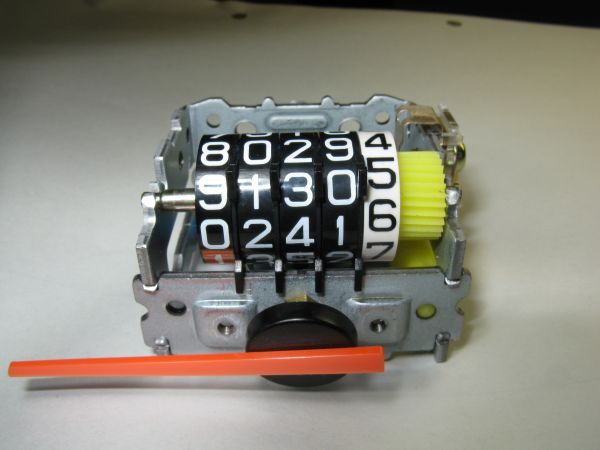
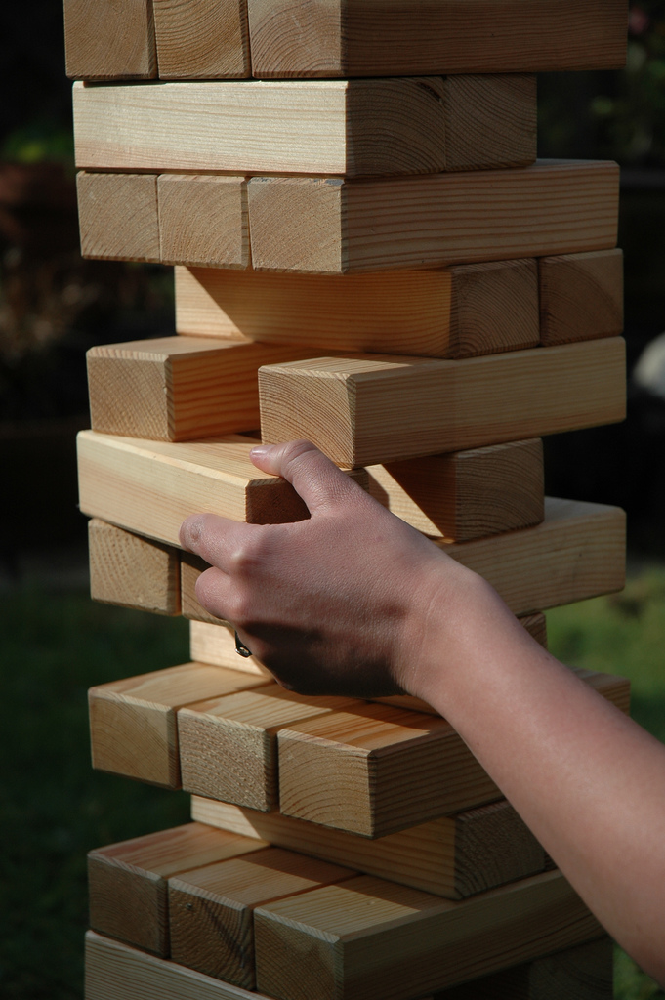
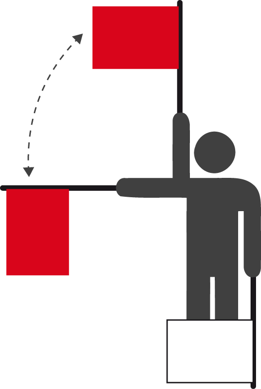
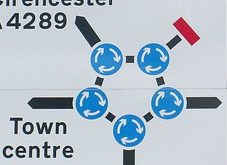

Estructures de repetició
- Una estructura de repetició permet executar les mateixes instruccions diverses vegades. Imatge de Wikimedia Commons
Fins al moment, tots els programes que heu estudiat, ja fossin més complexos o més senzills, tenien una característica en comú. El seu flux de control avançava inexorablement cap a la instrucció final del mètode principal sense possibilitat de recular. Sigui quin sigui el camí alternatiu per on s’hi ha arribat, un cop una instrucció ha estat executada, ja no es tornarà a executar mai més. Aquest fet contrasta amb el comportament que podeu observar en moltes activitats que fem diàriament, com per exemple, quan posem sal al menjar que cuinem. Podem repetir diverses vegades el procés de posar sal i tastar-ho fins que el gust sigui el que volem (i llavors ja deixem de posar sal i de tastar). Aquest procés es representa com un diagrama de flux de control a la figura.
Això també passa en programes del vostre ordinador, en què es poden repetir accions sense problemes: obrir i desar diferents fitxers, connectar-se a diferents pàgines web, etc. Aquí és on entra en joc el tipus següent d’estructura de control, també molt important dins el codi d’un programa.
Les estructures de repetició o iteratives permeten repetir una mateixa seqüència d’instruccions diverses vegades, mentre es compleixi una certa condició.
En el seu aspecte general, tenen molt de semblant a una estructura de selecció. Hi ha una sentència especial que cal escriure al codi font, unida a una condició lògica i un bloc de codi (en aquest cas, sempre en serà només un). Però en aquest cas, mentre la condició lògica sigui certa, tota la seqüència d’instruccions es va executant repetidament. En el moment en què es deixa de complir la condició, es deixa d’executar el bloc de codi i ja se segueix amb la instrucció que hi ha després de la sentència de l’estructura de repetició.
Anomenem bucle o cicle el conjunt d’instruccions que s’ha de repetir un cert nombre de vegades, i anomenem iteració cada execució individual del bucle.
Com passa amb les estructures de selecció, hi ha diferents tipus de sentències, cadascuna amb les seves particularitats. Normalment, la diferència principal està vinculada al moment en què s’avalua la condició per veure si cal tornar a repetir el bloc d’instruccions o no. Al llarg d’aquest apartat, les anireu veient amb detall.
Control de les estructures repetitives
Com passava amb les estructures de selecció, les estructures de repetició no tenen sentit si no és que la condició lògica depèn d’alguna variable que pugui veure modificat el seu valor per a diferents execucions. En cas contrari, la condició sempre valdrà el mateix per a qualsevol execució possible i usar una estructura de control no serà gaire útil. En aquest cas, si la condició sempre és false, mai no s’executa el bucle, per la qual cosa és codi inútil. Però, per a les estructures de repetició, si la condició sempre és true el problema és molt més greu. Com que absolutament sempre que s’avalua si cal fer una nova iteració, la condició es compleix, el bucle no es deixa mai de repetir. El programa mai no acabarà!
Un bucle infinit és una seqüència d’instruccions dins d’un programa que itera indefinidament, normalment perquè s’espera que s’assoleixi una condició que mai no s’arriba a produir.
Quan això succeeix, el programa no es pot aturar de cap altra manera que no sigui tancant-lo directament des del sistema operatiu (per exemple, tancant la finestra associada o amb alguna seqüència especial d’escapament del teclat) o usant algun mecanisme de control de l’execució del vostre programa que ofereixi l’IDE usat.
Bucle infinit
Un bucle infinit és un error semàntic de programació. Si n’hi ha, el programa compilarà perfectament de tota manera.
Tenint en compte el perill que un programa s’acabi executant indefinidament, forçosament dins de tot bucle hi ha d’haver instruccions que manipulin variables el valor de les quals permeti controlar la repetició o el final del bucle. Aquestes variables s’anomenen variables de control.
Garantir l’assignació correcta de valors de les variables de control d’una estructura repetitiva és extremadament important. Quan genereu un programa, és imprescindible que el codi permeti que, en algun moment, la variable canviï de valor, de manera que la condició lògica es deixi de complir. Si això no és així, tindreu un bucle infinit.
Normalment, les variables de control dins d’un bucle es poden englobar dins d’algun d’aquests tipus de comportament:
- Comptador: una variable de tipus enter que va augmentant o disminuint, indicant de manera clara el nombre d’iteracions que caldrà fer.
- Acumulador: una variable en què es van acumulant directament els càlculs que es volen fer, de manera que en assolir cert valor es considera que ja no cal fer més iteracions. Si bé s’assemblen als comptadors, no són ben bé el mateix.
- Semàfor: una variable que serveix com a interruptor explícit de si cal seguir fent iteracions. Quan ja no en volem fer més, el codi simplement s’encarrega d’assignar-li el valor específic que servirà perquè la condició avaluï
false.
Evidentment, una condició lògica pot prendre la forma d’una expressió molt complexa, però per començar n’hi ha prou de conèixer aquests tres models. De vegades, les diferències poden ser subtils, i per això tampoc no cal amoïnar-se gaire si no es té clar a quin tipus pertany exactament la variable de control. Igualment, tenir presents aquests tres papers bàsics pot ser d’ajut amb vista a enfocar la programació d’una estructura de selecció.
Els semàfors també s’anomenen popularment flags (banderoles d’avís).
Repetir si es compleix una condició: la sentència ''while''
L’estructura de repetició per antonomàsia és la codificada mitjançant la sentència while. Aquesta existeix d’una manera o una altra en la majoria de llenguatges de programació. La seva particularitat és que pràcticament qualsevol codi basat en una estructura de repetició es pot representar usant aquesta sentència. Amb aquesta ja en tindríeu prou per tractar gairebé qualsevol cas possible. Això succeeix amb contraposició de les estructures de selecció, en què cada tipus de sentència ofereix diferents possibilitats.
La sentència while permet repetir l’execució del bucle mentre es verifiqui la condició lògica. Aquesta condició es verifica al principi de cada iteració. Si la primera vegada, tot just quan s’executa la sentència per primer cop, ja no es compleix, no s’executa cap iteració.
Sintaxi i estructura
Per dur a terme aquest tipus de control sobre les iteracions d’un bucle, la sintaxi d’aquesta sentència en el llenguatge Java és la següent:
Com podeu veure, el seu format és molt semblant a la sentència if, simplement canviant la paraula clau per while. Com ja passava amb les diferents sentències dins les estructures de selecció, si entre els parèntesis es posa una expressió que no avalua un resultat de tipus booleà, hi haurà un error de compilació.
while
El nom de la sentència while bàsicament significa: “Mentre això es compleixi, fes això altre…”.
La figura mostra un diagrama del flux de control d’aquesta sentència, i estableix l’ordre sota el qual s’avalua la condició lògica representada per l’expressió booleana amb vista a establir si cal executar o no una iteració del bucle.

La millor manera de veure com funciona i constatar-ne la utilitat és mitjançant alguns exemples concrets.
Exemple: estalviar-vos d'escriure el mateix molts cops
La utilitat més directa d’una estructura de repetició és que, en cas que vulgueu executar exactament les mateixes instruccions moltes vegades, no les hàgiu d’escriure una pila de cops. Per exemple, suposeu que voleu escriure una línia horitzontal a la pantalla exactament amb quaranta caràcters ’-’. Evidentment, res us impedeix pitjar exactament 40 vegades la tecla, ni una més ni una menys, i ja està. Però, també ho faríeu si cal escriure’n cent, mil o fins i tot més? Fer-ho amb una estructura de repetició és més còmode.
Per assolir aquesta fita, cal que el bucle iteri un cert nombre de vegades. Per fer-ho, us caldrà una variable de control de tipus comptador, que serveixi per comptar quantes iteracions hi ha fetes. O sigui, cada cop que es produeix una iteració, sumar-hi 1. Un cop aquesta variable supera el valor que volem, ja no cal fer més iteracions. Per tant, la condició lògica ha de controlar si el valor de la variable és inferior al nombre d’iteracions que cal fer.
Un possible codi que il·lustra això seria el següent. Compileu-lo i executeu-lo per veure què fa:
Hi ha un parell de qüestions del codi anterior que val la pena comentar. D’una banda, la nomenclatura de la variable de control de tipus comptador. Evidentment, es pot usar l’identificador que es vulgui, però és comú usar lletres individuals (i, j, k…) per poder identificar ràpidament quina variable dins un bucle és un comptador i facilitar-ne la comprensió. D’altra banda, a l’hora d’usar comptadors, se sol començar des del valor 0 en lloc d’1.
- 
- Un comptador controla el nombre d'iteracions que cal fer. Imatge de Wikimedia Commons
Per veure amb més detall què està passant dins un bucle, en lloc d’un esquema basat en el diagrama de flux de control usarem una taula. Cada fila correspondrà a una iteració i a cada columna s’especificarà el valor de les diferents variables dins del bucle, de manera que es pot veure com evolucionen a cada iteració. Normalment, es fa èmfasi en el valor a l’inici del bucle, tot just abans d’avaluar la condició lògica, i al final del bucle, tot just després de la darrera instrucció, per veure quines han estat les modificacions en executar les instruccions contingudes. Evidentment, els valors de les variables a l’inici d’una iteració han de ser exactament els mateixos que tot just a l’inici de la següent.
La taula mostra un resum de com canvia el valor de la variable de control i de quin és el resultat d’avaluar la condició lògica a cada iteració per a l’exemple actual.
Col·loquialment, per dir que ja no cal fer més iteracions se sol dir que “se surt del bucle”.
-| Iteració | Inici del bucle | Fi del bucle | |
|---|---|---|---|
| ‘i’ val | Condició val | ‘i’ val | |
| 1 | 0 | (0 < 100), true | 1 |
| 2 | 1 | (1 < 100), true | 2 |
| 3 | 2 | (2 < 100), true | 3 |
| … | |||
| 99 | 98 | (98 < 100), true | 99 |
| 100 | 99 | (99 < 100), true | 100 |
| 101 | 100 | (100 < 100), false | Ja hem sortit del bucle |
Repte 1: en molts casos, el nombre de repeticions no serà fix, sinó que podrà dependre d’una altra variable. Modifiqueu l’exemple perquè primer pregunti a l’usuari quants caràcters '-' vol escriure per pantalla, i llavors els escrigui. Quan proveu el programa, no introduïu un nombre gaire alt!
Exemple: aprofitar un comptador
La utilitat de les estructures de selecció va molt més enllà de ser una manera senzilla d’estalviar-se escriure el mateix codi moltes vegades. Amb aquestes es poden executar instruccions de maneres que no es poden replicar simplement fent moltes vegades “copiar” i “enganxar” dins del codi font. I és que, a l’hora de la veritat, un comptador sol tenir un paper més important que simplement comptar el nombre d’iteracions que s’han fet. El valor que emmagatzema també es pot usar dins del bucle per dur a terme altres propòsits.
Per exemple suposeu que voleu imprimir per pantalla tots els valors de la taula de multiplicar d’un nombre enter qualsevol, des de l’1 fins al 10. Sense aturar-nos gaire a pensar, aquest programa hauria de fer:
- 1. Demanar que s’introdueixi un nombre pel teclat.
- 2. Llegir-lo.
- 3. Mostrar el resultat de multiplicar el nombre per 1.
- 4. Mostrar el resultat de multiplicar el nombre per 2.
- …
- 12. Mostrar el resultat de multiplicar el nombre per 10.
D’aquesta descripció es desprèn que del pas 3 al 12 s’estan repetint ordres, que segurament es poden reemplaçar per una estructura de repetició. Concretament hi ha 10 passes entre la 3 i la 12, i a cadascuna el que es fa és més o menys el mateix: multiplicar el valor introduït per un valor que cada vegada s’incrementa en 1. És a dir, cal un comptador. Però aquest comptador ara, a més a més de garantir que es fan 10 iteracions, també s’usa per fer càlculs.
D’acord amb això, un possible codi podria ser el següent. Proveu que funciona.
Fixeu-vos que, tot i que normalment en els comptadors es comença a comptar pel 0, en aquest cas cal començar per l’1, ja que dins dels càlculs que cal fer, el primer pas requereix que la multiplicació sigui per 1. La taula mostra l’evolució de les variables a cada iteració, suposant que es faci la taula de multiplicar del 5.
| Iteració | Inici del bucle | Fi del bucle | ||
|---|---|---|---|---|
| ‘i’ val | Condició val | ‘resultat’ val | ‘i’ val | |
| 1 | 1 | (1 ≤ 10), true | 5*1, 5 | 2 |
| 2 | 2 | (2 ≤ 10), true | 5*2, 10 | 3 |
| 3 | 3 | (3 ≤ 10), true | 5*3, 15 | 4 |
| … | ||||
| 9 | 9 | (9 ≤ 10), true | 5*19, 45 | 10 |
| 10 | 10 | (10 ≤ 10), true | 5*10, 50 | 11 |
| 11 | 11 | (11 ≤ 10), false | Ja hem sortit del bucle | |
Repte 2: un comptador tant pot començar a comptar des de 0 i anar pujant, com des del final i anar disminuint com un compte enrere. Modifiqueu aquest programa perquè la taula de multiplicar comenci mostrant el valor per a 10 i vagi baixant fins a l’1.
Exemple: no sempre se suma u
A l’hora d’usar variables de control amb la funció de comptador, és molt típic que l’increment sigui d’u en u. Això és lògic, ja que és la manera més simple de comptar quantes iteracions s’han fet. Per fer 10 iteracions, si bé és el mateix sumar d’u en u i comparar amb 10 o sumar de dos en dos i comparar amb 20, és clar que el primer cas és molt més entenedor. Ara bé, quan els comptadors també tenen dins del bucle un paper per fer certes operacions, s’ha de tenir present que es poden incrementar o modificar en qualsevol valor.
Per exemple suposeu un programa que permeti sumar tots els valors enters múltiples de 3 dins d’un interval entre 0 i un valor qualsevol. Una primera aproximació podria ser:
- Preguntar el límit de l’interval.
- Llegir-lo.
- Anar mirant un per un tots els valors dins l’interval, de 0 al límit estipulat.
- Si és múltiple de tres, es va acumulant en una variable en què es desa el resultat final.
- Si no ho és, s’ignora.
- Un cop recorregut tot l’interval (superat el valor límit), es mostra el resultat acumulat.
El codi font que faria això podria ser el següent. Aquest codi té la particularitat –i per això val la pena estudiar-lo– que combina estructures de repetició amb estructures de selecció. Ara bé, el format de l’estructura de repetició no és gaire diferent dels exemples anteriors: un comptador que va de 0 a un valor concret per controlar quants cops itera el bucle. Per fer-lo més entenedor quan l’executeu, cada cop que es troba un múltiple de 3 el mostra per pantalla.
Per veure si un nombre és múltiple de 3 cal comprovar si el seu mòdul (%) 3 és igual a 0.
Ara bé, hi ha una manera de simplificar aquest programa. Seria molt més senzill si, en lloc d’anar provant un per un tots els valors dins del rang, el comptador sempre tingui únicament valors múltiples de 3. En aquest cas, només caldria anar sumant els valors sense necessitar cap estructura de selecció. Partint d’aquest fet, quins valors hauria d’anar prenent el comptador? Doncs 0, 3, 6, 9, 12, 15, etc. Si pensem una mica en aquesta seqüència de nombres, es veu que hi ha prou que el comptador s’incrementi de tres en tres.
Per tant, el codi del bucle es podria reemplaçar pel següent:
Una variable de control amb el paper de comptador es pot modificar de qualsevol manera que es consideri escaient. Ara bé, sempre cal garantir que a cada iteració us apropeu a la condició lògica false, i eviteu així un possible bucle infinit.
La taula mostra l’evolució de les variables del programa a cada iteració del bucle, suposant que es vol fer càlcul fins al nombre 20. La prova que es fan 7 iteracions és que, si executeu el programa, es pot veure com s’executa exactament 7 vegades la instrucció System.out.println….
| Iteració | Inici del bucle | Fi del bucle | ||
|---|---|---|---|---|
| ‘i’ val | Condició val | ‘resultat’ val | ‘i’ val | |
| 1 | 0 | (0 ≤ 20), true | 0+0, 0 | 3 |
| 2 | 3 | (3 ≤ 20), true | 0+3, 3 | 6 |
| 3 | 6 | (6 ≤ 20), true | 3+6, 9 | 9 |
| 4 | 9 | (9 ≤ 20), true | 9+9, 18 | 12 |
| 5 | 12 | (12 ≤ 20), true | 18+12, 30 | 15 |
| 6 | 15 | (15 ≤ 20), true | 30+15, 45 | 18 |
| 7 | 18 | (18 ≤ 20), true | 45+18, 63 | 21 |
| 8 | 21 | (21 ≤ 20), false | Ja hem sortit del bucle | |
Abans de donar per tancat aquest exemple, hi ha un aspecte força significatiu que val la pena tenir en compte quan s’usen estructures de repetició. En aquest cas concret, què passa si quan us pregunten el valor fins on es vol sumar escriviu 0 o un nombre negatiu? Bé, per contestar aquesta pregunta cal recordar que la condició s’avalua tot just abans de cada iteració, inclosa la primera vegada que s’arriba a la sentència while. En aquest cas, tan sols començar, la condició lògica no es compleix, per la qual cosa mai no s’arriba a executar cap iteració.
Recordeu, doncs, que en usar una sentència while si la primera vegada que s’avalua la condició lògica aquesta avalua a false el codi inclòs dins del bucle no s’arribarà a executar mai.
Exemple: acumular càlculs
Els exemples que heu vist fins ara tenien en comú l’ús d’una variable de control de tipus comptador, a partir de la qual es pot veure de manera més o menys clara quantes iteracions farà el bucle. En tots els casos, la particularitat és que aquest comptador serveix com a valor auxiliar, que fins i tot pot ajudar a fer els càlculs que volem, però no és pròpiament el valor resultant. En l’exemple d’imprimir diversos caràcters '-' el resultat és el fet d’imprimir per pantalla. En el de la taula de multiplicar, el resultat que volem és el resultat de la multiplicació. Finalment, en l’exemple de sumar múltiples de tres, el resultat és la variable mateixa resultat.
Ara bé, en una estructura de repetició, l’evolució del mateix resultat que s’està calculant pot ser el senyal de sortida per deixar de fer iteracions. Aquest seria el cas d’usar variables amb el paper d’acumulador. Un exemple d’aquest comportament, en què una variable es va modificant de manera que es deixa d’iterar quan aquesta conté el resultat final, és el càlcul de l’operació mòdul amb enters (%).
- 
- Un acumulador reflecteix les modificacions en el resultat que apropen el final del bucle. Imatge de Paul Carvill
El mòdul calcula el residu de dividir un enter (el dividend) per un altre (el divisor). Una estratègia simple per calcular-lo és anar restant el divisor al dividend fins que ja no es pot fer més, ja que donaria negatiu. En aquest cas, el valor del dividend es va modificant directament fins a trobar la solució.
Si s’estructura pas per pas, seria:
- Es pregunta quin és el dividend.
- Es llegeix.
- Es pregunta quin és el divisor.
- Es llegeix.
- Si el dividend és més petit que el divisor, ja hem acabat. El divisor ja és resultat del mòdul.
- En cas contrari, al dividend se li resta el divisor.
- Es torna a comprovar el pas 5.
Tot i que s’ha usat la paraula “si” en el pas 5, observant atentament les passes 5 a 7 es veu que en realitat denoten un bucle, ja que es van repetint fins que es produeix una condició concreta: que el valor del divisor és menor que el del dividend. Per tant, la condició per seguir repetint les instruccions és que el dividend sigui igual o més gran que el divisor.
El codi font del programa que du a terme aquestes passes seria el següent. Proveu que funciona al vostre entorn de treball. Per fer l’execució més aclaridora, a cada iteració es mostra per pantalla com es va modificant el dividend.
La taula mostra l’evolució del valor del dividend per a cada iteració per al càlcul de 17%4 (que ha de donar 1). El resultat final és el valor acumulat en la variable dividend quan se surt del bucle.
| Iteració | Inici del bucle | Fi del bucle | |
|---|---|---|---|
| ‘dividend’ val | Condició val | ‘dividend’ val | |
| 1 | 17 | (17 > 4), true | 17 – 4 = 13 |
| 2 | 13 | (13 > 4), true | 13 – 4 = 9 |
| 3 | 9 | (9 > 4), true | 9 – 4 = 5 |
| 4 | 5 | (5 > 4), true | 5 – 4 = 1 |
| 5 | 1 | (1 > 20), false | Ja hem sortit del bucle |
Repte 3: l’ús de comptadors i acumuladors no és excloent, sinó que pot ser complementari. Penseu com es podria modificar el programa per calcular el resultat del mòdul i la divisió entera alhora. Recordeu que la divisió entera simplement seria comptar quantes vegades s’ha pogut restar el divisor.
Exemple: semàfors
El darrer cas que queda per estudiar és l’us d’un semàfor per indicar de manera explícita si ja no cal fer iteracions. Aquesta estratègia d’ús de variables de control es basa en situacions en què decidir si es vol continuar fent iteracions d’un bucle no es pot predir o calcular d’acord amb un valor que va augmentant o disminuint. Simplement, cal anar repetint fins que es compleixi una condició molt concreta. Llavors, del que es disposa és d’una variable de control, normalment de tipus booleà, sobre la qual es fa una assignació explícita que provocarà que la condició lògica avaluï directament a false i se surti del bucle.
- 
- Un semàfor o banderola avisa: "Objectiu complert! No cal iterar més."
Un exemple d’aquest cas és un programa en què cal endevinar un valor secret. Mitjançant una estructura de selecció és possible establir si s’ha encertat o no, però el que no té sentit és que cada cop que es vulgui provar d’endevinar-lo, s’hagi d’executar el programa de nou. El més normal és que es pregunti a l’usuari fins que l’encerti. En aquest cas, però, no hi ha un valor que a poc a poc, gradualment, va variant fins a poder establir que cal deixar d’iterar. Es passa de cop de continuar preguntant al fet que ja no calgui, segons la condició de si s’ha encertat o no. Aquesta es pot donar en qualsevol iteració, però és impossible estimar quan, ja que depèn totalment del valor introduït per l’usuari.
Si descrivim el què cal fer pas per pas, seria:
- Decidir quin serà el nombre per endevinar.
- Demanar que s’introdueixi un nombre pel teclat.
- Llegir-lo.
- Si el nombre no és el valor secret:
- Cal avisar que s’ha fallat.
- Tornar al pas 2.
- En cas contrari, ja hem acabat. Mostrar una felicitació.
Les passes 2 a 4 denoten que hi ha una estructura de repetició, la condició de la qual és que cal iterar mentre el valor secret no s’encerti.
El codi corresponent a aquest procés és el que es mostra tot seguit. Proveu que, efectivament, continua preguntant nombres fins que s’encerta el valor secret. En aquest cas, la variable de control que fa de semàfor és haEncertat. Fixeu-vos que, evidentment, cal que el valor inicial sigui el que permetrà que, com a mínim, hi hagi una iteració del bucle (la condició avaluï a true). En cas contrari, mai no s’entraria al bucle.
La taula mostra l’evolució de les iteracions del bucle quan algú prova els nombres 3, 6, 9 i 4, en aquest ordre.
| Iteració | Inici del bucle | Fi del bucle | ||
|---|---|---|---|---|
| ‘haEncertat’ val | Condició val | ‘valorUsuari’ val | ‘haEncertat’ val | |
| 1 | false | (!false), true | 3 | false |
| 2 | false | (!false), true | 6 | false |
| 3 | false | (!false), true | 9 | false |
| 4 | false | (!false), true | 4 | true |
| 5 | true | (!true), false | Ja hem sortit del bucle | |
Exemple: semàfors i comptadors alhora
La categorització de les variables de control en tres models diferents no significa que una estructura de repetició sempre hagi de dependre d’una única variable. Recordeu que la condició lògica es representa com una expressió booleana i, per tant, pot ser tan complexa com es vulgui. En alguns casos, hi pot haver més d’una condició sota les quals es considera que no cal fer més iteracions d’un bucle.
Torneu a fer una ullada al programa per endevinar un valor secret. Ara ja té una mica més de sentit, però encara hi ha un aspecte que potser el fa una mica estrany: el programa no s’acabarà fins que endevineu el valor secret. Continuarà preguntant una vegada i una altra fins que encerteu. Si no encerteu mai, no s’acabarà mai. Potser seria més raonable posar un límit al nombre d’intents, de manera que si es falla més d’un cert nombre de vegades es considera que heu perdut el joc i s’acaba el programa. En aquest cas, la condició lògica ha de preveure dues possibilitats: si s’ha encertat el valor secret o si s’ha esgotat el nombre d’intents. És a dir, combinar un semàfor i un comptador.
Descrit pas per pas, podria ser:
Mai no hi haurà més iteracions que el valor estipulat en el comptador d’intents, d’acord amb el seu increment.
- Decidir quin serà el nombre per endevinar i el màxim d’intents.
- Demanar que s’introdueixi un nombre pel teclat.
- Llegir-lo.
- Descomptar un intent.
- Si el nombre no és el valor secret, i si no s’han esgotat els intents:
- Cal avisar que s’ha fallat.
- Tornar al pas 2.
- En cas contrari, ja hem acabat.
- Si el darrer nombre dit és el valor secret, cal dir que s’ha guanyat.
- Si el darrer nombre dit no és el valor secret, cal dir que s’ha perdut.
La característica més important d’aquest problema, en què hi ha més d’una possibilitat sota la qual el bucle deixa d’iterar, és, un cop se’n surt, detectar el motiu exacte pel qual se n’ha sortit. Abans, sortir del bucle sempre implicava que s’havia encertat el valor secret, però ara ja no. Aquest és el paper que tenen les passes 7 i 8. En aquest cas, una manera de veure si les iteracions han acabat perquè s’ha endevinat el valor secret o perquè s’han esgotat els intents és mirant el darrer valor que s’ha entrat.
El programa que duria a terme aquest joc seria el següent. Proveu de posar-lo en marxa.
Abans de seguir, val la pena subratllar que, en aquest programa, el valor llegit des del teclat s’usa fora del bucle, en la sentència if/else. Per tant, per garantir que l’àmbit de la variable valorUsuari és el correcte, s’ha de declarar amb anterioritat i dins del mateix bloc. Si es declara dins del codi del bucle, hi haurà un error.
La taula mostra un exemple d’evolució del bucle per a un cas en què s’intenten els valors 2 i 4, de manera que s’encerta el valor abans d’esgotar els intents. A la darrera fila se subratlla la part de la condició que és determinant perquè avaluï a fals. Noteu que, en sortir del bucle, valorUsuari val 4, raó per la qual l’estructura de selecció considerarà que s’ha guanyat.
| Iteració | Inici del bucle | Fi del bucle | ||||
|---|---|---|---|---|---|---|
| ‘haEncertat’ val | ‘intents’ val | Condició val | ‘valorUsuari’ val | ‘haEncertat’ val | ‘intents’ val | |
| 1 | false | 3 | (!false)&&(3>0), true | 2 | false | 2 |
| 2 | false | 2 | (!false)&&(2>0), true | 4 | true | 1 |
| 3 | true | 1 | (!true)&&(1>0), false | Ja hem sortit del bucle | ||
També és interessant veure què passa si es fallen tots els intents, per exemple introduint 2, 5 i 7. Això es veu a la taula. En aquest cas, en sortir del bucle, valorUsuari val 7, de manera que l’estructura de selecció considerarà que s’ha perdut.
| Iteració | Inici del bucle | Fi del bucle | ||||
|---|---|---|---|---|---|---|
| ‘haEncertat’ val | ‘intents’ val | Condició val | ‘valorUsuari’ val | ‘haEncertat’ val | ‘intents’ val | |
| 1 | false | 3 | (!false)&&(3>0), true | 2 | false | 2 |
| 2 | false | 2 | (!false)&&(2>0), true | 5 | false | 1 |
| 3 | false | 1 | (!false)&&(1>0), true | 7 | false | 0 |
| 4 | false | 0 | (!false)&&(0>0), false | Ja hem sortit del bucle | ||
Finalment, per la complexitat de l’exemple, també val la pena estudiar amb detall un cas especial: quan s’encerta en el darrer intent, per exemple, en introduir successivament els valors 2, 5 i 4. Aquest cas és especial, ja que la condició lògica avalua a false com a resultat del fet que les dues expressions individuals també avaluen a false, tant la que comprova si s’han esgotat el nombre d’intents com la que comprova si ha encertat. Ara bé, com que el darrer valor que s’ha intentat és el correcte, l’estructura de selecció considera que es guanya el joc. Això es pot veure més detalladament a la taula.
| Iteració | Inici del bucle | Fi del bucle | ||||
|---|---|---|---|---|---|---|
| ‘haEncertat’ val | ‘intents’ val | Condició val | ‘valorUsuari’ val | ‘haEncertat’ val | ‘intents’ val | |
| 1 | false | 3 | (!false)&&(3>0), true | 2 | false | 2 |
| 2 | false | 2 | (!false)&&(2>0), true | 5 | false | 1 |
| 3 | false | 1 | (!false)&&(1>0), true | 4 | true | 0 |
| 4 | true | 0 | (!true)&&(0>0), false | Ja hem sortit del bucle | ||
Repetir almenys un cop: la sentència ''do/while''
Tot i que la sentència while és més que suficient per dur a terme pràcticament qualsevol estructura de repetició, n’hi ha d’altres que s’adapten millor a certs casos molt concrets. La seva aportació consisteix exclusivament a facilitar la lectura del codi o permetre dur a terme algunes tasques de manera automàtica.
La sentència do/while permet repetir l’execució del bucle mentre es verifiqui la condició lògica. A diferència de la sentència while, la condició es verifica al final de cada iteració. Per tant, independentment de com avaluï la condició, com a mínim sempre es durà a terme la primera iteració.
Al contrari que la sentència while, la sentència do/while no és tan comuna en els llenguatges de programació.
Sintaxi i estructura
Per dur a terme aquest tipus de control sobre les iteracions d’un bucle, la sintaxi d’aquesta sentència en llenguatge Java és la següent:
Com podeu veure, és molt semblant a la sentència while, però invertint el lloc on apareix la condició lògica. Per poder distingir clarament on comença el bucle s’usa la paraula clau do. Les instruccions del bucle continuen encerclades entre claus, {…}.
La figura mostra un diagrama del flux de control d’aquesta sentència i estableix també l’ordre sota el qual s’avalua l’expressió que representa la condició lògica, en aquest cas al final, amb vista a decidir si cal executar o no una nova iteració del bucle.
Exemple: control d'entrada per teclat
En un exemple anterior ja s’ha vist la utilitat de les estructures de repetició a l’hora de preguntar dades a l’usuari. Ara bé, un àmbit en què encara és més útil i més freqüent usar-la és el de controlar si la dada es correspon amb algun dels valors esperats abans de donar-la per bona i usar-la. Amb el que heu vist fins al moment, si l’usuari s’equivoca i escriu alguna dada errònia (per exemple, fora del rang esperat), sou capaços de detectar-ho i mitjançant una estructura de selecció avisar l’usuari, però llavors el programa acaba. Això no té gaire sentit; seria molt més còmode simplement tornar-li a preguntar repetidament fins que introdueixi un valor que s’adeqüi als valors esperats.
do/while
El nom de la sentència do/while vol dir: “Fes això, i continua fent-ho mentre es compleixi aquesta condició”.
Tot i que amb un ús assenyat de la sentència while és pot dur a terme aquesta tasca, reemplaçar-la per la sentència do/while pot ser especialment còmode. El motiu principal és que en aquests casos, abans d’avaluar si la dada és correcta o no, primer cal haver-la llegit. Per tant, és més intuïtiu avaluar la condició lògica al final i no al principi del bucle, un cop realment ja es disposa de la dada.
Normalment, en usar aquesta sentència, la condició lògica avalua directament el valor que es vol controlar, per veure si compleix els requisits establerts. La dada llegida mateixa fa les funcions de semàfor.
L’esquema general per fer això seria:
- Demanar la dada a l’usuari.
- Llegir-la.
- Mirar si la dada és correcta. Si no ho és, tornar al punt 1.
- Si és correcta, ja hi podem operar.
Les passes 1 a 3 identifiquen que hi ha un bucle que té com a condició lògica que les dades escrites no són correctes. Ara bé, l’avaluació d’aquest fet es fa al final, no al principi de la seqüència d’instruccions. A més a més, es compleix que, fins i tot en el millor cas, si l’usuari no s’equivoca, les passes 1 a 3 sempre es duran a terme almenys un cop.
Per exemple, proveu el programa següent, que garanteix que qualsevol valor introduït estarà entre 0 i 10 (com és el cas del que s’espera en l’exemple anterior d’endevinar un nombre).
La taula mostra un exemple d’evolució del bucle amb l’entrada dels nombres –4, 15 i 4. En aquest cas, la columna d’avaluació de la condició es troba al final del bucle. A l’avaluació, se subratlla la part de l’expressió que és determinant perquè avaluï a true i es provoqui una nova iteració.
do/while| Iteració | Inici del bucle | Fi del bucle | |
|---|---|---|---|
| ‘valorUsuari’ val | ‘valorUsuari’ val | Condició val | |
| 1 | 0 | -4 | (–4<0)||(–4>10), true |
| 2 | -4 | 15 | (15<0)||(15>10), true |
| 3 | 15 | 4 | (4<0)||(4>10), false |
| 4 | 4 | Ja hem sortit del bucle | |
En realitat, en aquest cas, un cop la condició ha avaluat a false a la tercera iteració ja es continua directament amb la instrucció següent del programa. No hi ha cap nou salt a l’inici del bucle, al contrari del que passa amb la sentència while. L’avaluació de la condició es fa al final de cada iteració, i no abans de començar cada una.
Repte 4: apliqueu aquesta comprovació a algun dels exemples anteriors vistos fins al moment. Per exemple, altres casos en què té sentit comprovar si un valor pertany a un rang esperat per garantir que un preu és positiu, o si un nombre de mes està entre 1 i 12.
Repetir un cert nombre de vegades: la sentència ''for''
En algunes situacions especials ja es coneix, a priori, la quantitat exacta de vegades que caldrà repetir el bucle. En tal cas és útil disposar d’un mecanisme que representi de manera més clara la declaració d’una variable de control de tipus comptador, l’especificació de fins on s’ha de comptar, i que al final de cada iteració incrementi o disminueixi el seu valor de manera automàtica, en lloc d’haver de fer-ho nosaltres. Automatitzar aquest darrer punt és molt important, ja que evita que per un oblit no es faci i s’acabi generant un bucle infinit.
Oblidar-se de modificar una variable comptador és un error molt típic quan s’usen estructures de repetició.
La sentència for permet repetir un nombre determinat de vegades un conjunt d’instruccions.
La majoria de llenguatges solen disposar de l’equivalent a aquesta sentència.
Sintaxi i estructura
La sintaxi d’aquesta sentència en llenguatge Java és una mica més complexa, ja que hi intervenen molts factors. Cal especificar tres apartats especials separats per punt i coma (;):
La descripció de cada apartat és la següent:
for
El nom de la sentència for vol dir: “Per veure quantes vegades cal fer això, compta d’aquest valor a aquest altre”.
- Inicialització comptador: es tracta de la inicialització d’una variable de tipus numèric que servirà com a comptador. És exactament igual que assignar un valor a una variable qualsevol (
identificador = valorInicial). Si es vol, es permet declarar la variable alhora que s’inicialitza (tipus identificador = valorInicial). - Expressió booleana: es tracta de la condició lògica que indica si cal fer una nova iteració o no, igual que en la resta d’estructures de repetició.
- Increment: es tracta d’una instrucció que modifica el valor del comptador, normalment una assignació. Aquesta instrucció s’executa automàticament al final de cada iteració. Tot i el seu nom, tant pot ser un increment com una disminució del valor.
La figura mostra un diagrama de flux de control d’aquesta sentència i indica quan s’executa cada element de la declaració de la sentència i quan s’avalua l’expressió que denota la condició lògica. Noteu que la inicialització només es fa una vegada, tot just abans de fer la primera avaluació de la condició lògica. En canvi, l’increment del comptador es fa al final de cada iteració, com si fos la darrera instrucció escrita dins del bucle.
De fet, la sentència for és equivalent a una sentència while que segueixi l’estructura següent:
Exemple: la taula de multiplicar, versió 2
La sentència for s’usa normalment en lloc de while en casos en què cal una variable de control que va variant el seu valor en una quantitat fixa a cada iteració, ja sigui incrementant-se o decreixent. És el que passa, per exemple, amb els casos controlats per un comptador, com els primers exemples de la sentència while.
L'operador postincrement/decrement
Per posar un exemple de la sentència for, s’introduiran uns nous operadors unaris existents en alguns llenguatges, com el Java. Aquests són especialment útils per especificar l’autoincrement en el tercer apartat de la sentència for. Es tracta del postincrement (++) i del postdecrement (–). El resultat d’aplicar-lo és que se suma o es resta 1 al valor de la variable, respectivament. La sintaxi és: identificadorVariable++ i identificadorVariable–, en cada cas. Per exemple, i++, valor–, etc.
La seva particularitat és que, com a operador, es pot usar directament dins d’una expressió. En aquest cas, a l’hora d’avaluar-la la seva precedència és la primera.
Tot seguit hi ha l’adaptació a la sentència for de l’exemple de la taula de multiplicar. Comproveu que fa exactament el mateix.
De fet, la taula d’evolució del bucle és exactament igual que la de la versió original amb la sentència while (taula).
Repte 5: com passa amb els programes basats en la sentència while amb una variable de control de tipus comptador, el comptador d’una sentència for no necessàriament s’ha de modificar sumant/restant d’u en u. Adapteu l’exemple de la suma de múltiples de tres usant la sentència for.
Exemple: més enllà de sumar i restar
De la mateixa manera que res no obliga que un comptador s’incrementi d’u en u, tampoc no és imprescindible que l’operació sigui una suma o una resta. Qualsevol operació que garanteixi que el valor es va apropant a un cas en què la condició lògica avaluarà a false i se sortirà del bucle és suficient. Això també és cert per a l’apartat d’autoincrement de la sentència for.
Per exemple, el codi següent usa una sentència for per mostrar totes les potències de dos menors o iguals que una fita que estableix l’usuari. Per fer-ho, incrementa la variable de control (en aquest cas, amb el paper d’acumulador) fent multiplicacions. Compileu-lo i executeu-lo per veure que, efectivament, és així.
La taula mostra l’evolució del bucle per al cas de posar com a límit el valor 70. Recordeu que el valor inicial de la variable i en la primera iteració del bucle es deu a la inicialització dins del primer apartat de la sentència for, mentre que el valor al final es deu a l’autoincrement especificat en el tercer apartat (i = 2*i).
for| Iteració | Inici del bucle | Fi del bucle | |
|---|---|---|---|
| ‘i’ val | Condició val | ‘i’ val | |
| 1 | 1 | (1 ≤ 70), true | 2 * 1 = 2 |
| 2 | 2 | (2 ≤ 70), true | 2 * 2 = 4 |
| 3 | 4 | (4 ≤ 70), true | 2 * 4 = 8 |
| 4 | 8 | (8 ≤ 70), true | 2 * 8 = 16 |
| 5 | 16 | (16 ≤ 70), true | 2 * 16 = 32 |
| 6 | 32 | (32 ≤ 70), true | 2 * 32 = 64 |
| 7 | 64 | (64 ≤ 70), true | 2 * 64 = 128 |
| 8 | 128 | (128 ≤ 100), false | Ja hem sortit del bucle |
Combinació d'estructures de selecció
- 
- Fer bucles dins d'altres bucles és com una "rotonda màgica" Imatge de Wikimedia Commons
Com passava amb les estructures de selecció, res no impedeix combinar diferents estructures de repetició, imbricades unes dins de les altres, per dur a terme tasques més complexes. En darrera instància, la combinació i imbricació d’estructures de selecció i repetició conformarà el vostre programa.
Quan es combinen estructures de repetició cal ser molt acurats i tenir present quines variables de control estan associades a la condició lògica de cada bucle. Tampoc no us oblideu de sagnar correctament cada bloc d’instruccions, per poder així identificar ràpidament on acaba i comença cada estructura.
Exemple: la taula de multiplicar, versió 3
Normalment, la combinació d’estructures de repetició sempre està fonamentada per la necessitat de fer diversos cops una tasca que ja de per si requereix una estructura de repetició. Per exemple, suposeu que en lloc de voler un programa que mostri una única taula de multiplicar, com en un exemple anterior, es volen mostrar diverses taules de multiplicar. Des de la de l’1 fins al valor que escolliu. Hi ha dues tasques repetitives: cal repetir N vegades una tasca que mostra una taula completa, la qual és a la vegada la repetició de 10 multiplicacions.
El codi que duria a terme aquesta tasca seria el següent. Com que es tracta d’una tasca basada en un comptador, s’usarà la sentència for per a les dues estructures repetitives.
Aquest exemple també és força interessant, ja que té en compte l’àmbit de les variables que s’usen com a comptador per dur a terme la seva tasca. Així, doncs, la variable i, el comptador del bucle de primer nivell (el més “extern”), pot ser usada dins del bucle de segon nivell (el més “intern”), ja que es considera declarada fins a la clau que tanca el seu bloc de codi. El cas invers per a j no és cert i fer-ho produiria un error de sintaxi.
Exemple: endevinar el nombre secret, versió 3
Val la pena mostrar com a exemple un programa una mica més complex, també basat en la combinació d’estructures de repetició. En un exemple anterior s’ha vist que aquest tipus d’estructures són útils per controlar si l’entrada de dades és correcta. Si es combina aquest exemple amb el programa per endevinar un nombre secret, en què es pregunta repetides vegades a l’usuari quina resposta vol donar, llavors tindreu l’esquema del programa següent, que depèn de dues estructures de repetició, una dins de l’altra:
- Decidir quin serà el nombre per endevinar i el màxim d’intents.
- Demanar que s’introdueixi un nombre pel teclat.
- Llegir-lo.
- Mirar si el valor és correcte. Si no ho és, tornar al pas 2.
- Si és correcte, ja s’hi pot operar.
- Descomptar un intent.
- Si el nombre no és el valor secret i no s’han esgotat els intents:
- Cal avisar que s’ha fallat.
- Tornar al pas 2.
- En cas contrari, ja hem acabat.
- Si el darrer nombre dit és el valor secret, cal dir que s’ha guanyat.
- Si el darrer nombre dit no és el valor secret, cal dir que s’ha perdut.
El codi seria el que es mostra tot seguit. Tot i l’aparent complexitat, fixeu-vos que, bàsicament, es parteix del programa original d’endevinar el valor secret i que, a la part on es demanava el valor, s’insereix directament l’estructura de l’exemple de control de dades correctes. Compileu-lo i executeu-lo per comprovar que funciona.
Solucions dels reptes proposats
Repte 1:
Repte 2:
Repte 3:
Repte 4:
Repte 5: